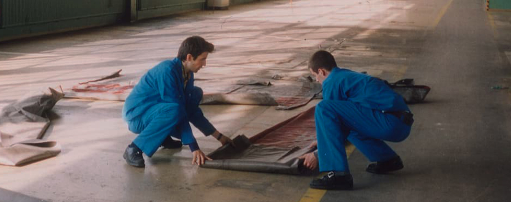
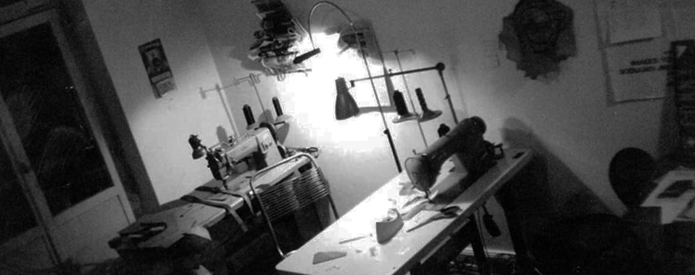
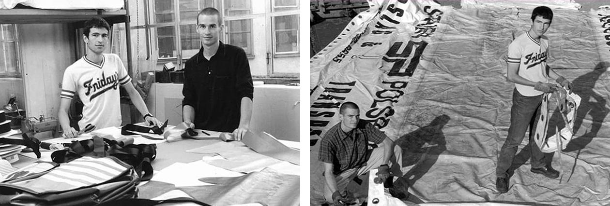
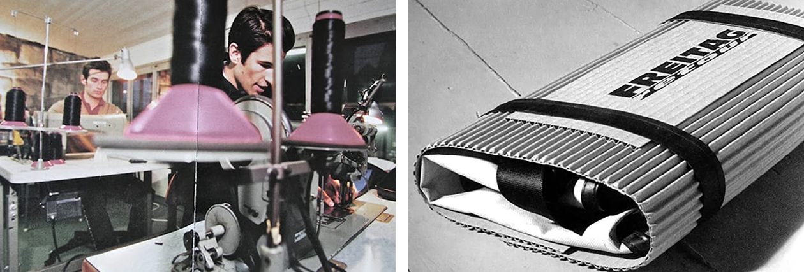

The Birth of Freitag
미래적인 비지니스 모델로 지난 30년간 우리와 함께하고 있는 프라이탁. 우리의 시작을 90년대 초로 시간을 돌려 차근차근 알려줍니다.
-

Let's Go Back To 1993
Daniel and Markus Freitag
Testing Manufacturing 1993, Zürich -
Daniel and Markus Freitag's
Apartment 1993, Zürich
Between Mattress And Stereo System
마커스 프라이탁은 그의 방, 매트리스와 스테레오 시스템 사이에서세척된 트럭 방수포를 펼치고 패턴을 그렸습니다. 그의 아파트는 가방 공장으로 탈바꿈했습니다. 아침에 일어나서 – 음, 정오라고 합시다 – 그리고 샤워를 하려고 했을 때, 욕조는 이 검은 양조주에 떠 있는 트럭 방수포 조각으로 가득 차 있었습니다. 복도는 자전거 내부 튜브로 가득 찬상자로가득했습니다. 아침부터 저녁까지 부엌에서 덜그럭거리며 들리는 것은 거리의 소음을 힘들이지 않고 빨아들이는 공업용 재봉틀이었습니다.
-
Daniel and Markus Freitag
Testing Manufacturing 1993, Zürich그 동안 다니엘 프라이탁은 미국 여행에서 돌아와 아파트의 마지막 여유 공간에 컴퓨터와 프린터를 설치했습니다. 그는 주문, 배송, 재고 등을 위한 데이터베이스를 개발 중이었습니다.
-
Daniel and Markus Freitag
The very First Sampling Proccess 1993, Zürich그 동안 다니엘 프라이탁은 미국 여행에서 돌아와 아파트의 마지막 여유 공간에 컴퓨터와 프린터를 설치했습니다. 그는 주문, 배송, 재고 등을 위한 데이터베이스를 개발 중이었습니다.
The Birth of Frietag
어느 순간, 첫 번째 프라이탁 가방을 축하하는 파티가 열렸습니다. 프라이탁 가방은 도시 고속도로 옆 보도에 있는 가스통에서 제공되는 음료와 함께한 작은 파티에서 소개되었고 많은 사람들에게 환영을 받았습니다. 사람들은 술을 마시고, 채팅을 하고, 가방을 사는 것을 즐겼습니다. 시간을 되돌리고 다른 일을 할 수 있었다면 아마 카메라를 들고 역사적인 사건으로 밝혀진 것을 기록했을 것입니다. 하지만 여전히 좋은 기억이 몇 개 있고 그것만으로도 충분합니다.